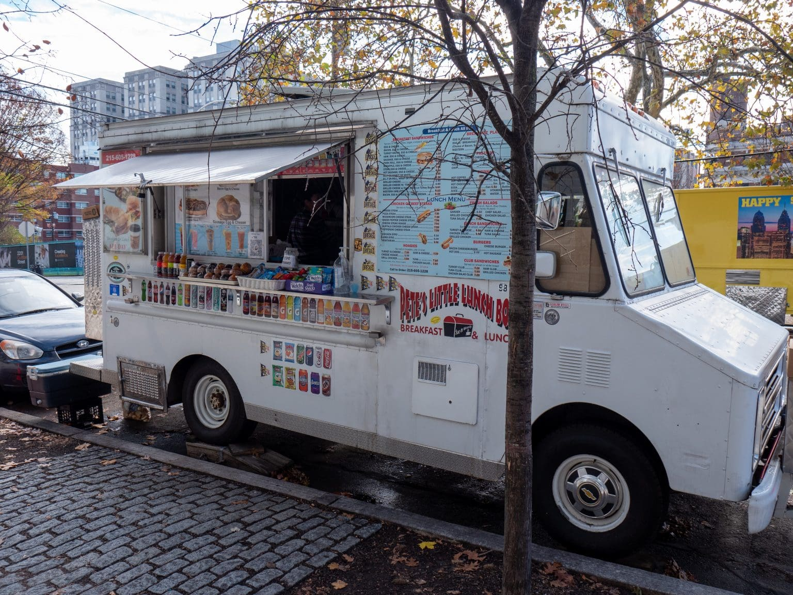

THE OVERVIEW
Date: Jan. 2025 - Mar. 2025
Roles: UX/UI Designer / Web App Developer
Tools: Figma, Figjam, Adobe After Effects, Adobe Illustrator, Jitter, Microsoft Teams, VSCode, Github, MySQL, phpMyAdmin
Coding Languages: HTML, CSS, JavaScript, PHP
Team: Fei Young, Maple Tieu, Sreeja Satish, Yen Luong, Yi Huan Yang
Our team designed and developed a mobile ordering app for Pete’s Little Lunchbox, simplifying the cluttered menu and ordering process while maintaining its signature red branding. Using Figma, we iteratively refined prototypes through user testing before implementing the design with HTML, CSS, JavaScript, PHP, and a MySQL database. To stay organized and efficient, we collaborated through Microsoft Teams and FigJam.
Over four rounds of user testing, we optimized key screens to ensure a seamless, intuitive experience. Positive feedback validated our approach, and future enhancements could include QR code scanning and dark/light mode options.
CONTEXT AND CHALLENGE
The Food Truck: Pete's Little Lunchbox
Pete’s Little Lunchbox is a breakfast and lunch food truck located at 33rd and Arch Street, serving a variety of meals to Drexel students and local workers.
Before starting this project, some team members were already familiar with Pete’s strong reputation in the community, as well as its lack of advertising and branding. This presented an exciting opportunity to design and develop a takeout app that captured the comfort and practicality of its quick, on-the-go service.
The Team: BeepBop
- Fei Young – Designer and Frontend Developer
- Maple Tieu – Designer and Data Architect
- Sreeja Satish – Project Manager and Data Architect
- Yen Luong – Backend Developer and Data Architect
- Yi Huan Yang – Project Manager and Designer
My Role: As the primary designer and secondary (front-end) developer, I conducted user research through user testing and interviews (acting as both a moderator and a notetaker) to inform intuitive, user-centered designs. I created a high-fidelity interactive prototype in Figma, utilizing components, variables, and auto-layout for scalable, pixel-perfect designs that can easily be translated into code during development. I prioritized accessibility, ensuring our designs passed color contrast tests and implementing readable text sizes and a visual hierarchy.
On the development side, I contributed to the frontend implementation, ensuring that the code was perfect to the Figma prototype. I created PHP components for the microinteractions such as the filter bar, bottom navigation, CTA buttons, and more. Throughout the process I integrated dynamic, responsive UI elements with backend functionality. I collaborated closely with our backend developer, Yen, to align design and technical execution, ensuring a seamless and engaging user experience.
Timeline
This project occurred over 10 weeks and was broken into 5 phases.
Phases:
- Mid-Fidelity
- High-Fidelity
- Alpha
- Beta
- Final
Challenge
Although Pete’s menu appeared extensive, its length was an illusion—many customization options were displayed at a glance, making it feel overwhelming despite its simplicity. Our challenge was to streamline the menu (through both design and development) while preserving its variety and ease of customization.
Additionally, Pete’s had no social media presence or branding beyond the truck’s red, white, and black color scheme. This gave us creative freedom while establishing red as the dominant color in our design. Red became both a challenge and an asset—its boldness created a strong visual identity but required careful application to maintain balance and usability. In the end, it became a defining element of Pete’s brand, enhancing both recognition and user experience.
Goals and Objectives
Our objectives for this project were to:
- Implement a dynamic MySQL database for efficient menu data retrieval
- Integrate PHP seamlessly to streamline and optimize repetitive code
- Design item detail pages with customization options to reduce menu clutter
- Develop an intuitive navigation and filtering system for a smoother user experience
- Establish a strong brand identity through a mascot and a consistent color scheme
How we measured success:
- We aimed for at least 90% positive user feedback from the first to the final round of testing
PROCESS AND INSIGHT
Mid-Fidelity
High-Fidelity
Alpha
Beta
Final
THE SOLUTION
blah
THE RESULTS
blah